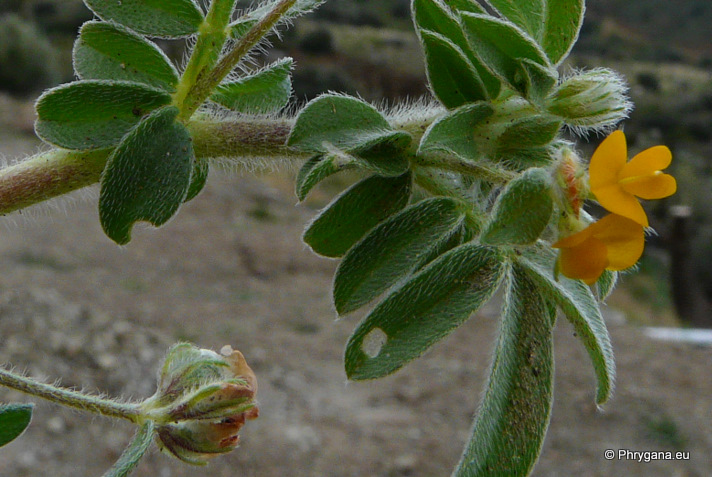
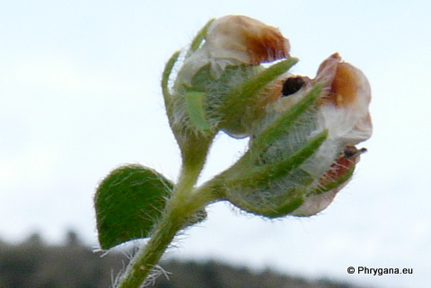
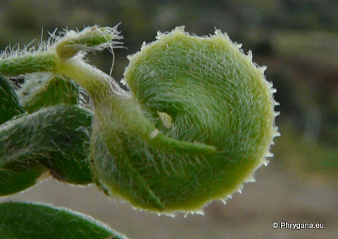
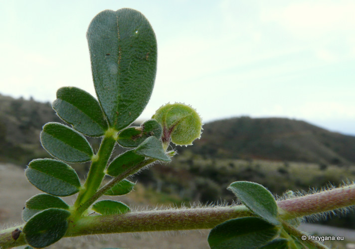
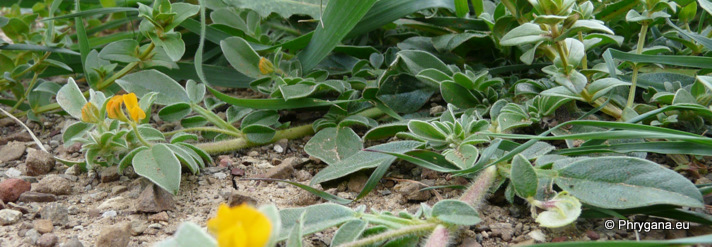

| PHRYGANA | Fauna | Flora |
additions nouveautés |
espèces species |
contact -
info - commentaires phrygana1 (at) gmail.com |
| Particularités crétoises | Galles et mines |
| Hymenicarpos circinnatus (L.) SAVI |
| 177 | Flora | FABACEAE | Loteae | Hymenocarpos SAVI |
 Hymenocarpos circinnatus Melambes (Agios Giorgos) 27 février 2010 |
| en: Disk trefoil | |
| Feuilles: poilues, vert franc; feuilles inférieures simples; feuilles supérieures composées imparipennées à 5 - 9 folioles oblongues, la terminale étant nettement plus grande. | |
| Tiges: poilues, couchées-ascendantes | |
| Fleurs: couronne 5 - 7 mm, jaune orangé; fleurs groupées (entre 2 et 8) en une tête longuement pédonculée | |
| Fruit: une gousse aplatie en disque, diamètre de 10 - 15 mm, avec des épines sur la marge | |
| Hauteur: 5 - 30 cm | Type biologique: thérophyte ramifié |
| Floraison: février mars avril mai juin | |
| Altitudes: 0 - 1150 m | |
| Statut en Crète: indigène -- native | |
| Biotopes en Crète: olivaies, lieux rocailleux ouverts, pierriers, sables maritimes, vignobles | |
| Distribution: région Méditerranéenne | |
  Hymenocarpos circinnatus Melambes (Agios Giorgos) 27 février 2010 |
|
 Hymenocarpos circinnatus Melambes (Agios Giorgos) 27 février 2010 |
|
 Hymenocarpos circinnatus Melambes (Agios Giorgos) 27 février 2010 |
| 06 novembre 2011 |
| © paul fontaine -- © Phrygana.eu 2007 -- 2013 |